A line can be long or short. A line can be flat or slant or vertical. If a line is rotated in any direction, it remains to be a line. So, given below (Fig. 4.3) are lines in different positions.
Fig. 4.3
But the following (Fig.4.4) are not straight lines.
Fig. 4.4
If the length of a line is ignored, then it can be extended in both the directions without ending as in (Fig. 4.5) given below. A line through two points A and B is written as AB or BA . Also it is denoted by a letter ' l '.
Fig. 4.5
4.2.1 Line segment
What do we call a line that is short and ends on both sides? That we call it as a line segment and name both of its ends with letters as shown in fig. 4.6.
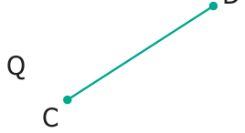
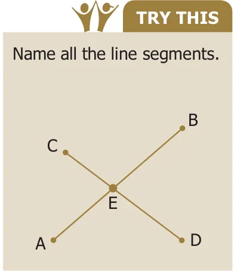
We usually use CAPITAL LETTERS to denote the ends of the line segments. A line segment is denoted by AB. What can we do with a line segment? We can measure its length. Suppose two line segments are given, we can compare their lengths and say which is shorter and which is longer.
Even if we measure length as a number, we get lots of line segments, each with a definite length. Using a ruler, we can draw the following line segments. 1 cm A B 2 cm A B 3 cm A B ... 10 cm A B What about a line segment of length 17 cm or 20 cm or 30 cm or 378 cm? Like, numbers never end, line segments get longer and longer forever!
4.2.2 Construction of line segment
Learn to measure line segments using the ruler.
Correct way of viewing the scale.
Wrong eye Wrong eye
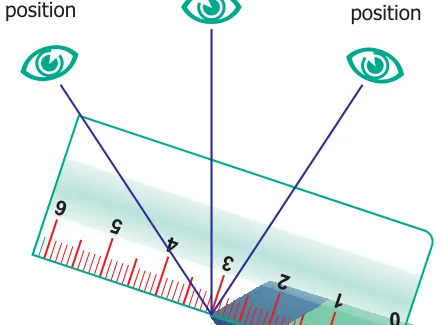
Object to be measured
Examples of Measuring Line Segments
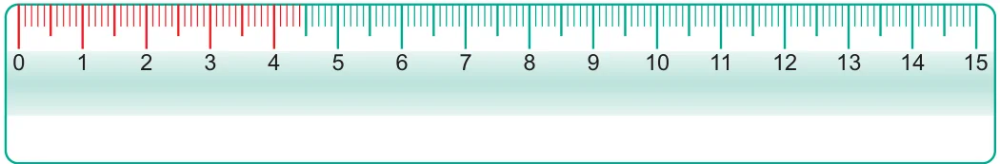
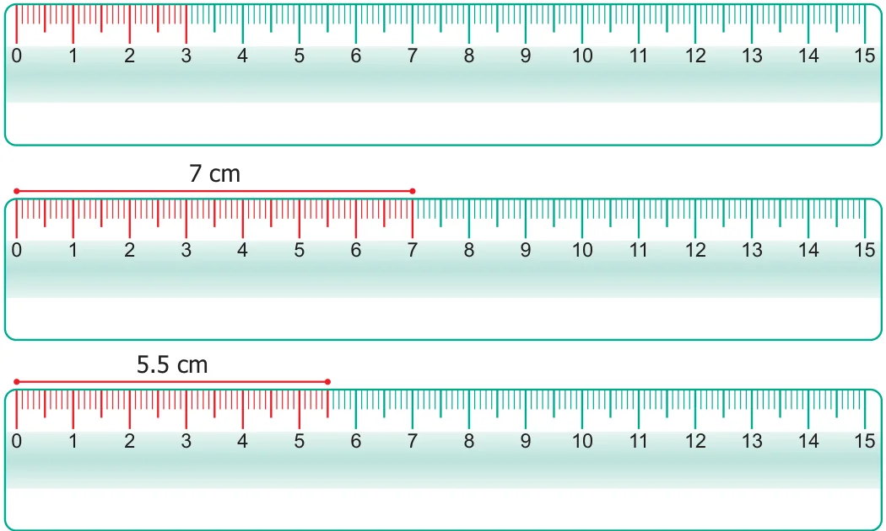
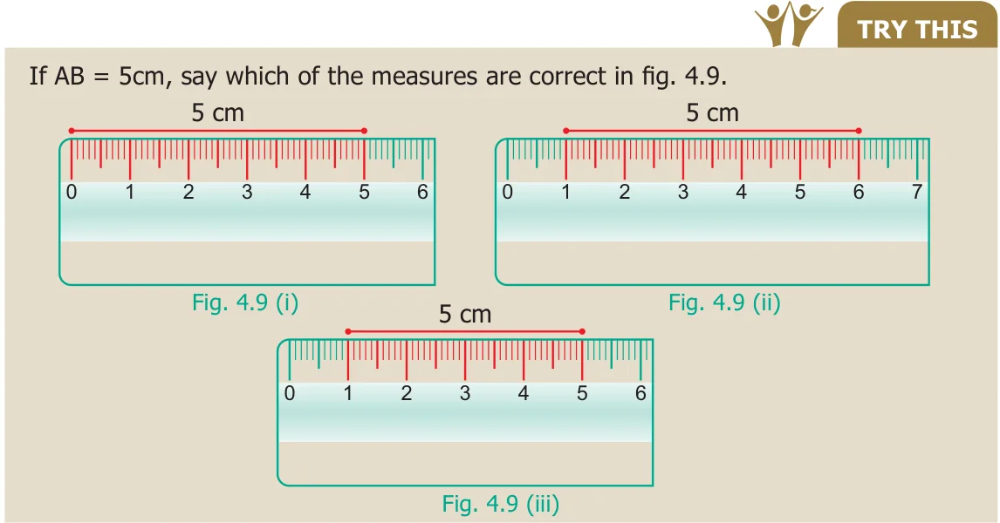
Geometry originated from two Greek words, geo, meaning earth and metron meaning measure. Geometry means earth measure. Around 600 B.C.(BCE), Thales of Miletus was the first to use deductive methods to develop geometric concepts. The Greek Mathematician, Pythagoras continued the systematic development of Geometry.
Example 4.1
With the help of a ruler and compass, draw a line segment \(PQ = 5.5cm\).
Solution
- Draw a line ' l ' and mark a point 'P' on it as shown in Fig. 4.10.
Fig. 4.10
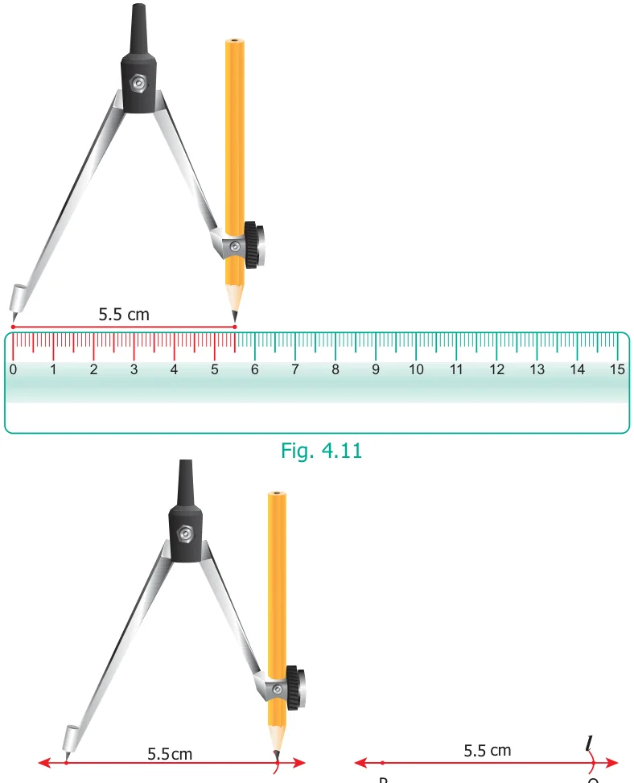
- Measure using compass as shown in Fig. 4.11 placing the pointer at '0' and the pencil pointer at 5.5 cm.
- Place the pointer of the compass at ' P ' then draw a small arc on the line 'l ' with the pencil pointer (Fig. 4.12). It cuts the line ' l ' at a point and name that point as 'Q' (Fig. 4.13).
Fig. 4.12 Fig. 4.13
- Now, PQ is the required line segment of length 5.5 cm.
Activity
This game can be played in small groups. Take 10 or more sticks of equal length. Join them as a bundle and put them on the floor in such a way that they fall one above the other. The challenge is to take one stick after other without disturbing the position of the other sticks.
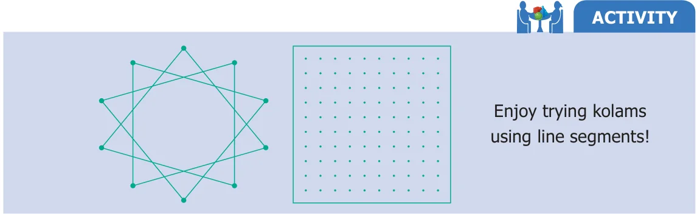
4.2.3 Two lines
Now let us get back to two lines (Fig. 4.14). Lines that go on forever on either side without meeting each other (i.e. they have a constant distance in between) are called parallel lines.
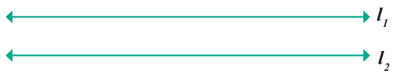
Thus, parallel lines go forever without meeting. What will happen if two lines are not parallel? Then they must meet somewhere! Of course, they go their way after meeting too.
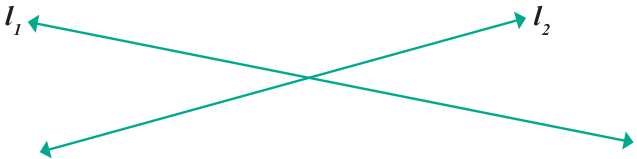
Here, land lare called intersecting lines. Of course, we now have parallel line segments and intersecting line segments too.
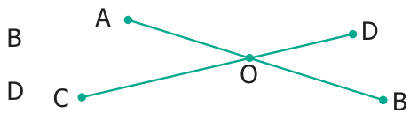
The position 'O' at which the line segments AB and CD meet is called their point of intersection.
Activity
Take a piece of paper and fold in as many ways as you can, which generates parallel lines or intersecting lines.
A few examples are shown for you.
Note
A line has no end points, whereas a line segment has two end points. We can measure the length of a line segment.
4.2.4 Rays
What about lines that end on one side but proceed indefinitely on the other side? We call them rays. They are denoted by AB,PQ,MN ..., etc. The fixed end point of a ray is called
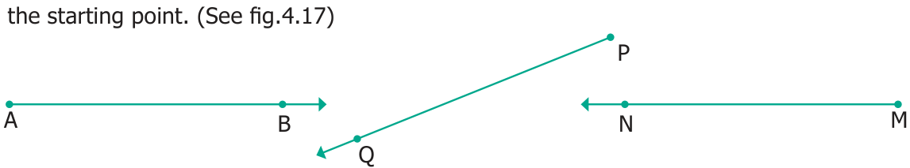
4.2.5 Two rays
With two rays we have more to learn. They can be parallel or intersecting.
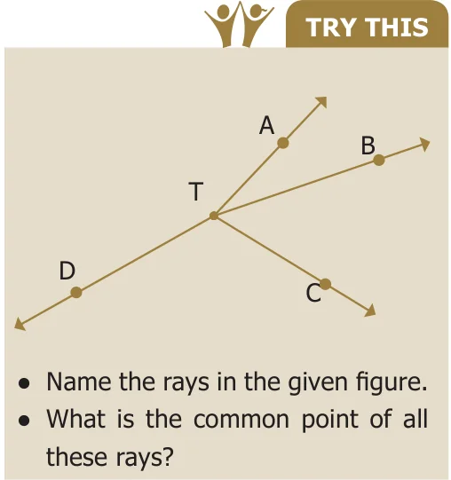
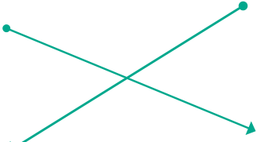
Two rays may have the same starting point.
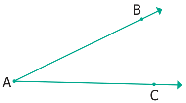